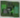
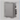

Manually Setting Subsystem Items
- Do one or more of the following:
- To create a new system under Systems:
a. Select the subsystem, and click Add module
b. In the Add HW module dialog box, enter HWModule ID and HWModule Name, and click OK.
c. Repeat the previous substeps to add as many systems as required. - To create a new zone under Zones:
a. Select the subsystem, and click Add zone .
b. In the Add a new zone dialog box, enter Zone ID and Zone name, and click OK.
c. Repeat the previous substeps to add as many zones as required. - To create a new sensor under Sensors:
a. Select the subsystem, and click Add sensor .
b. In the Add a new sensor dialog box, enter Sensor ID and Sensor name, and click OK.
c. Repeat the previous substeps to add as many sensors as required. - To create a new user under Users:
a. Select the subsystem, and click Add user .
b. In the Add a new user dialog box, enter User ID and User name, and click OK.
c. Repeat the previous substeps to add as many users as required. - To create a new program under Programs:
a. Select the subsystem, and click Add program
.
b. In the Add a new program dialog box, enter Program ID and Program name, and click OK.
c. Repeat the previous substeps to add as many programs as required.
NOTE: You can later modify this configuration. For instructions, see Adjusting CS6 Configuration.